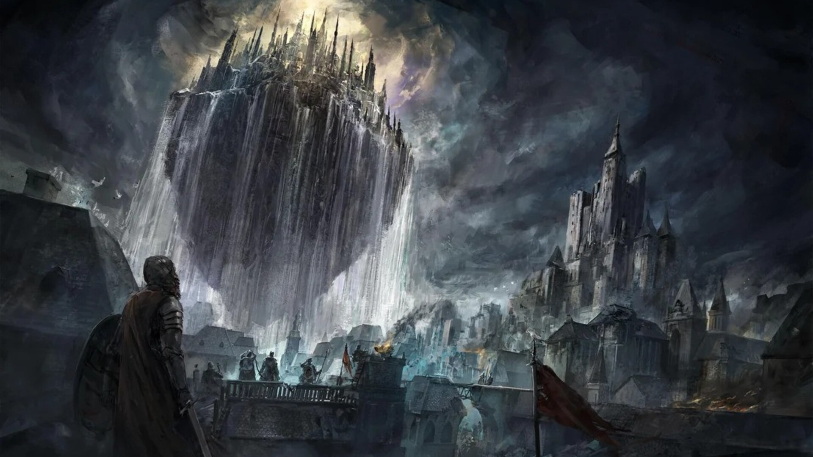
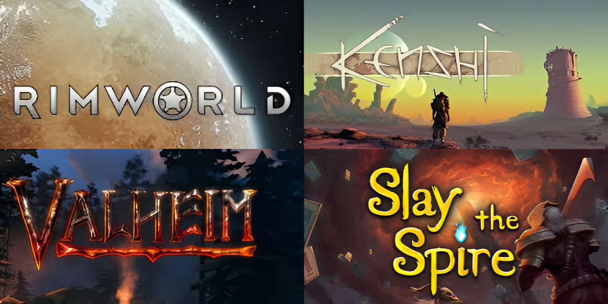

Welcome to my Portfolio!
I am a 23 year old student at STI, currently studying to get an associates in Computer Programming.
I am new to the field, but I have learned a ton over the course of my first semester and I am having a blast!
So far I have worked with making WinForm apps in C#, and websites using HTML, CSS, and some JavaScript.
This page is dedicated to introducing myself and my interests. Check out my other pages to see projects and contact information.
About me
I currently work at a warehouse, filled with menial and repetitive tasks. Listening to audio books while I am working has been an amazing way to deal with the monotony.
My recommendation for anyone into fantasy is the “Malazan: Book of the Fallen” series by Steven Erickson.
I also love video games, and they've been a hobby of mine since I was a kid. I would say they have contributed greatly towards my interest in technology.

